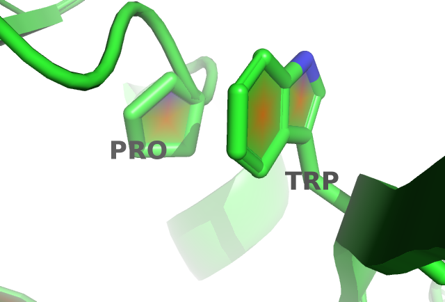

E.3 Aromatic-Proline Interactions
Figure E.3 shows a proline and a tryptophan residue forming such a CH/\(\pi\) interaction in protein 1aol. The corresponding coupling matrix in figure ?? reflects this interaction with strong positive coupling between proline and tryptophan.

Figure E.3: Proline and tryptophan (residues 17 and 34) stacked on top of each otherengaging in a CH/\(\pi\) interaction in protein chain 1aol_A_00.